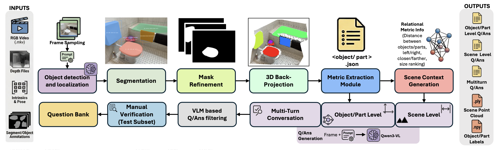
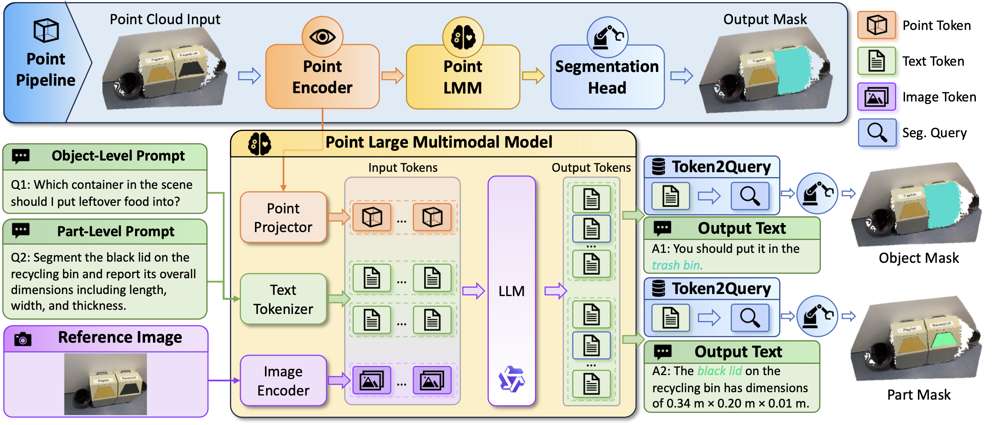
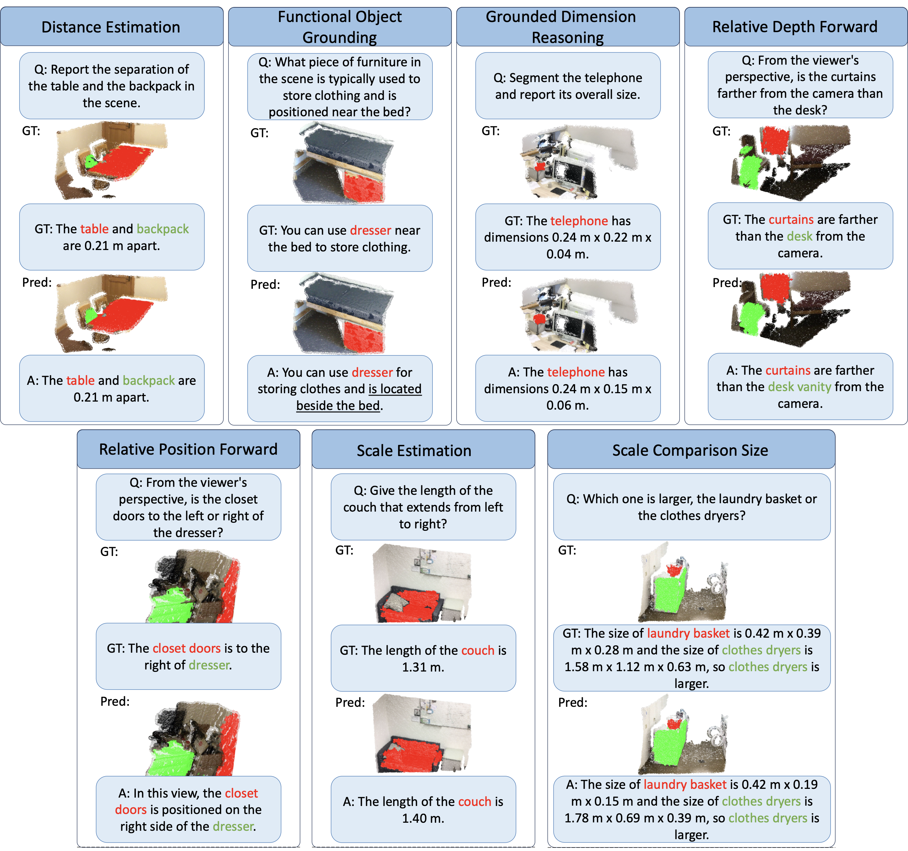
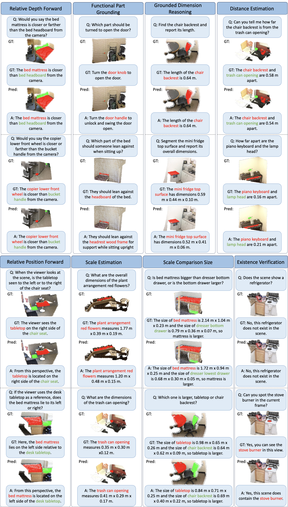
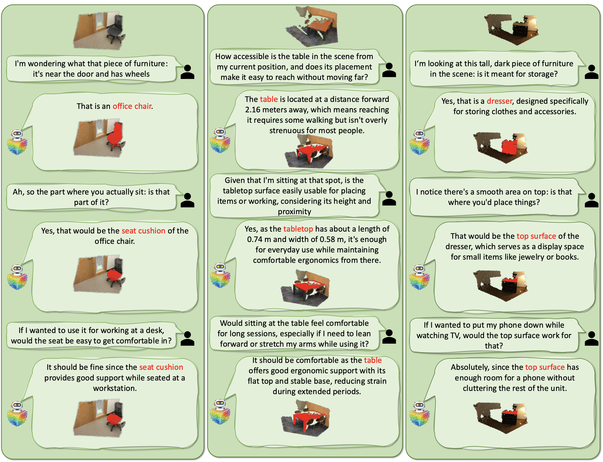

1Mohamed bin Zayed University of Artificial Intelligence 2The Hong Kong Polytechnic University 3Linköping University
Most 3D LMMs answer in words; Ground3D-LMM answers with point masks and metric numbers.
Natural-language queries about 3D environments become actionable when responses are verifiable and metric. We present Ground3D-LMM, a unified model that takes a point cloud and an optional RGB image as input and supports 3D spatial conversation with point-grounded responses and metric numeric outputs at both object and part granularity. We introduce the 3D Grounded Measurement task and the Ground3D Dataset, a large-scale corpus with ~2.5M question–answer pairs spanning eight tasks, built on ScanNet and ScanNet++.
Natural-language queries about a 3D scene, grounded to a point-level mask and answered in real-world units.
"Find the chair backrest and report its length."
The length of the chair backrest is 0.64 m.
Eight grounded reasoning tasks at either object or part level, plus a multi-turn dialogue mode that carries context across turns.
A ~2.5M-pair grounded spatial corpus built on ScanNet/ScanNet++ via an automatic pipeline, with point-level masks and metric annotations.
| Source | Level | Train | Test | Total |
|---|---|---|---|---|
| ScanNet1,433 train · 80 test scenes | ||||
| Object | 621,110 | 34,650 | 655,760 | |
| Part | 871,612 | 38,293 | 909,905 | |
| Multi-turn | 62,064 | — | 62,064 | |
| ScanNet++905 train · 48 test scenes | ||||
| Object | 320,946 | 18,450 | 339,396 | |
| Part | 485,387 | 13,012 | 498,399 | |
| Multi-turn | 9,783 | — | 9,783 | |
| Total QA | 2,370,902 | 104,405 | 2,475,307 | |
An automatic pipeline that turns RGB-D frames into grounded, metric question-answer pairs.

A four-stage architecture interleaves point, image, and language tokens inside the LMM and emits a binary point mask whenever a special grounding token (<SEG>) is generated. End-to-end trainable with a multi-task objective covering segmentation and language modeling.

Higher is better on all metrics. Our model rows are highlighted; (3D + 2D) additionally consumes an RGB image at inference.
| Method | Modality | Acc@0.25 | Acc@0.50 | mIoU |
|---|---|---|---|---|
| ScanRefer | 3D | 10.51 | 6.20 | — |
| EDA | 3D | 26.50 | 21.20 | — |
| UniSeg3D | 3D | — | — | 29.10 |
| IntentNet | 3D | 28.12 | 22.63 | 18.92 |
| MLLM-For3D + VideoLISA | 3D+2D | 33.12 | 31.21 | 30.45 |
| Ground3D-LMM ours | 3D | 55.73 | 32.71 | 38.72 |
| Ground3D-LMM ours | 3D+2D | 59.98 | 36.37 | 41.30 |
| Method | Modality | Acc@0.25 | Acc@0.50 | mIoU |
|---|---|---|---|---|
| Reason3D | 3D | 43.21 | 32.10 | 31.20 |
| MLLM-For3D + VideoLISA | 3D+2D | 48.45 | 41.02 | 39.82 |
| Ground3D-LMM ours | 3D | 50.32 | 37.01 | 36.35 |
| Ground3D-LMM ours | 3D+2D | 57.79 | 41.23 | 41.29 |
Out-of-distribution generalization on CA-VQA. Ground3D-LMM outperforms GPT-4o, SpatialRGPT-8B, and MM1.5 across all sub-metrics.
| Method | Binary | Count | 2D Gnd | 3D Gnd | Multi-c | Ego-Dist | Obj-Dist | Obj-Size | Avg |
|---|---|---|---|---|---|---|---|---|---|
| GPT-4o | 44.2 | 69.0 | 0.0 | 0.0 | 36.6 | 11.7 | 10.0 | 11.0 | 22.8 |
| SpatialRGPT-8B | 53.6 | 68.8 | 5.5 | 0.0 | 37.2 | 10.5 | 8.7 | 7.0 | 23.9 |
| MM1.5-3B | 59.1 | 9.1 | 32.6 | 0.0 | 38.6 | 0.6 | 2.2 | 3.4 | 18.2 |
| Ground3D-LMM ours | 81.2 | 82.8 | 41.2 | 11.5 | 85.7 | 37.8 | 14.2 | 30.0 | 48.1 |
Side-by-side ground truth and prediction across object-level, part-level, and multi-turn settings, with grounded point masks and metric answers.
Predictions across distance, functional grounding, dimension reasoning, depth, position, and size comparison.

The same task suite evaluated at part granularity.

Context-carrying dialogues that narrow from object-level to part-level focus across turns.

If you find this work useful, please consider citing it.
@misc{ground3dlmm,
title = {Ground3D-LMM: Fine-Grained 3D Point Grounding
and Spatial Reasoning with LMM},
author = {Harsh, Amol and Han, Zongyan and Lahoud, Jean
and Liu, Ye and Anwer, Rao Muhammad
and Cholakkal, Hisham and Khan, Salman
and Khan, Fahad Shahbaz}
}